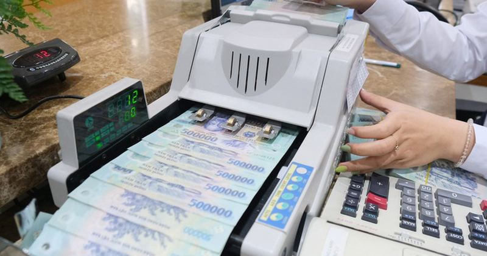

🔥Đọc nhanh 7-5: Giá dầu lao dốc, chứng khoán Mỹ tăng vọt, lãi suất liên ngân hàng trong nước vượt 7%
Lãi suất liên ngân hàng trong nước lại bật tăng - Ảnh: QUANG ĐỊNH Giá dầu lao dốc, chứng khoán Mỹ tăng vọt - Sáng 7-5 (theo giờ Việt Nam), hợp đồng dầu Brent tương lai giảm 7,2% xuống 101,96 USD/thùng. Trong khi dầu WTI